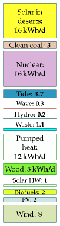
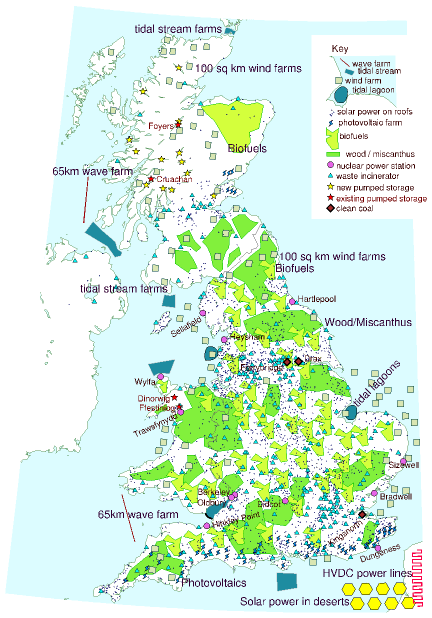
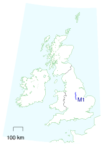
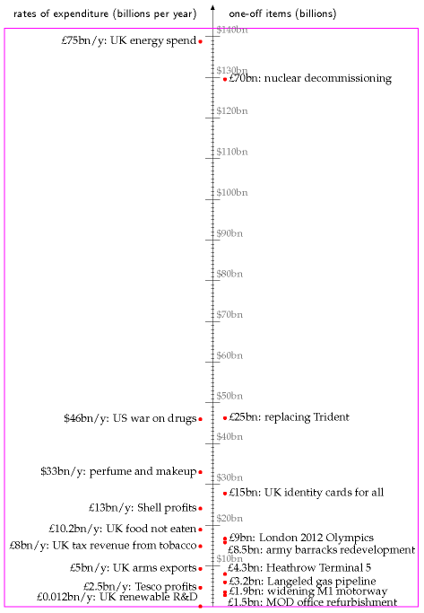
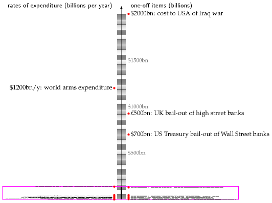

28 Putting costs in perspective
A plan on a map

Figure 28.1. Plan M
Let me try to make clear the scale of the previous chapter’s plans by showing you a map of Britain bearing a sixth plan. This sixth plan lies roughly in the middle of the first five, so I call it plan M (figure 28.1).
The areas and rough costs of these facilities are shown in table 28.3. For simplicity, the financial costs are estimated using today’s prices for comparable facilities, many of which are early prototypes. We can expect many of the prices to drop significantly. The rough costs given here are the building costs, and don’t include running costs or decommissioning costs. The “per person” costs are found by dividing the total cost by 60 million. Please remember, this is not a book about economics – that would require another 400 pages! I’m providing these cost estimates only to give a rough indication of the price tag we should expect to see on a plan that adds up.
I’d like to emphasize that I am not advocating this particular plan – it includes several features that I, as dictator of Britain, would not select. I’ve deliberately included all available technologies, so that you can try out your own plans with other mixes.
For example, if you say “photovoltaics are going to be too expensive, I’d like a plan with more wave power instead,” you can see how to do it: you need to increase the wave farms eight-fold. If you don’t like the wind farms’ locations, feel free to move them (but where to?). Bear in mind that putting more of them offshore will increase costs. If you’d like fewer wind farms, no problem – just specify which of the other technologies you’d like instead. You can replace five of the 100 km2 wind farms by adding one more 1 GW nuclear power station, for example.
Perhaps you think that this plan (like each of the five plans in the previous chapter) devotes unreasonably large areas to biofuels. Fine: you may therefore conclude that the demand for liquid fuels for transport must be reduced below the 2 kWh per day per person that this plan assumed; or that liquid fuels must be created in some other way.
Cost of switching from fossil fuels to renewables
Every wind farm costs a few million pounds to build and delivers a few megawatts. As a very rough ballpark figure in 2008, installing one watt of capacity costs one pound; one kilowatt costs 1000 pounds; a megawatt of wind costs a million; a gigawatt of nuclear costs a billion or perhaps two. Other renewables are more expensive. We (the UK) currently consume a total power of roughly 300 GW, most of which is fossil fuel. So we can anticipate that a major switching from fossil fuel to renewables and/or nuclear is going to require roughly 300 GW of renewables and/or nuclear and

Figure 28.2. A plan that adds up, for Scotland, England, and Wales. The grey-green squares are wind farms. Each is 100 km2 in size and is shown to scale. The red lines in the sea are wave farms, shown to scale. Light-blue lightning-shaped polygons: solar photovoltaic farms – 20 km2 each, shown to scale. Blue sharp-cornered polygons in the sea: tide farms. Blue blobs in the sea (Blackpool and the Wash): tidal lagoons. Light-green land areas: woods and short-rotation coppices (to scale). Yellow-green areas: biofuel (to scale). Small blue triangles: waste incineration plants (not to scale). Big brown diamonds: clean coal power stations, with cofiring of biomass, and carbon capture and storage (not to scale). Purple dots: nuclear power stations (not to scale) – 3.3 GW average production at each of 12 sites. Yellow hexagons across the channel: concentrating solar power facilities in remote deserts (to scale, 335 km2 each). The pink wiggly line in France represents new HVDC lines, 2000 km long, conveying 40 GW from remote deserts to the UK. Yellow stars in Scotland: new pumped storage facilities. Red stars: existing pumped storage facilities. Blue dots: solar panels for hot water on all roofs. 1
Capacity
Rough cost
Average power delivered
total
per person
52 onshore wind farms: 5200 km2
35 GW
£27bn
£450
4.2 kWh/d/p
– based on Lewis wind farm
29 offshore wind farms: 2900 km2
29 GW
£36bn
£650
3.5 kWh/d/p
– based on Kentish Flats, & including £3bn investment in jack-up barges.
Pumped storage: 15 facilities similar to Dinorwig
30 GW
£15bn
£250
Photovoltaic farms: 1000 km2
48 GW
£190bn
£3200
2 kWh/d/p
– based on Solarpark in Bavaria
Solar hot water panels: 1 m2 of roof-mounted panel per person. (60 km2 total)
2.5 GW(th) average
£72bn
£1200
1 kWh/d/p
Waste incinerators: 100 new 30 MW incinerators
3 GW
£8.5bn
£140
1.1 kWh/d/p
– based on SELCHP
Heat pumps
210 GW(th)
£60bn
£1000
12 kWh/d/p
Wave farms – 2500 Pelamis, 130 km of sea
1.9 GW (0.76 GW average)
£6bn?
£100
0.3 kWh/d/p
Severn barrage: 550 km2
8 GW (2 GW average)
£15bn
£250
0.8 kWh/d/p
Tidal lagoons: 800 km2
1.75 GW average
£2.6bn?
£45
0.7 kWh/d/p
Tidal stream: 15 000 turbines – 2000 km2
18 GW (5.5 GW average)
£21bn?
£350
2.2 kWh/d/p
Nuclear power: 40 stations
45 GW
£60bn
£1000
16 kWh/d/p
– based on Olkiluoto, Finland
Clean coal
8 GW
£16bn
£270
3 kWh/d/p
Concentrating solar power in deserts: 2700 km2
40 GW average
£340bn
£5700
16 kWh/d/p
– based on Solúcar
Land in Europe for 1600 km of HVDC power lines: 1200 km2
50 GW
£1bn
£15
– assuming land costs £7500 per ha
2000 km of HVDC power lines
50 GW
£1bn
£15
– based on German Aerospace Center estimates
Biofuels: 30 000 km2
(cost not estimated)
2 kWh/d/p
Wood/Miscanthus: 31 000 km2
(cost not estimated)
5 kWh/d/p
Table 28.3. Areas of land and sea required by plan M, and rough costs. Costs with a question mark are for technologies where no accurate cost is yet available from prototypes. “1 GW(th)” denotes one GW of thermal power.
thus have a cost in the ballpark of £300 billion. The rough costs in table 28.3 add up to £870 bn, with the solar power facilities dominating the total – the photovoltaics cost £190 bn and the concentrating solar stations cost £340 bn. Both these costs might well come down dramatically as we learn by doing. A government report leaked by the Guardian in August 2007 2 estimates that achieving “20% by 2020” (that is, 20% of all energy from renewables, which would require an increase in renewable power of 80 GW) could cost “up to £22 billion” (which would average out to £1.7 billion per year). Even though this estimate is smaller than the £80 billion that the rule of thumb I just mentioned would have suggested, the authors of the leaked report seem to view £22 billion as an “unreasonable” cost, preferring a target of just 9% renewables. (Another reason they give for disliking the “20% by 2020” target is that the resulting greenhouse gas savings “risk making the EU emissions trading scheme redundant.” Terrifying thought!)
What a watt costs now
A section added in the 2026 revision. This chapter opens with a rule of thumb that carried the whole of it: “installing one watt of capacity costs one pound.” Table 28.3 shows MacKay did not quite apply it uniformly — his own implied prices span from a few pence a watt for transmission lines up to £8.50 for desert solar — but £1 a watt is the anchor, and it is what makes his £870 billion total feel like a number a country could contemplate.
The rule has not drifted. It has fractured. Work his own table backwards into pounds per watt, adjust for eighteen years of inflation, and set the result against what Britain now pays:
| MacKay’s implied cost | the same in 2025 money | Britain, 2025 | |
|---|---|---|---|
| Solar photovoltaic farms | £3.96/W | £6.50/W | about £0.70/W |
| Onshore wind | £0.77/W | £1.30/W | about £1.30/W |
| Offshore wind | £1.24/W | £2.05/W | about £3.00/W |
| Nuclear | £1.33/W | £2.20/W | about £14/W |
Onshore wind is the only line that held. In real terms it costs today almost exactly what MacKay assumed, which after eighteen years of a maturing industry is itself a mild disappointment.
Everything else moved, and two items moved enormously in opposite directions.3
Solar took £448 billion off the bill
The two solar entries dominate MacKay’s costing: photovoltaic farms at £190 billion and concentrating solar in deserts at £340 billion. Together that is £530 billion of an £870 billion plan — 61% of the whole thing.
Both numbers are now wrong, and in the same direction. Photovoltaics cost about a ninth of what this chapter assumes in real terms. And the desert concentrating solar, as chapter 25 records, is not merely dearer than expected but a technology that lost outright to photovoltaics and was never built at scale. Replace both with photovoltaic panels at 2025 prices — 193 GW of them, at about £0.70 a watt — and the same delivered energy costs £135 billion at 2025 prices, or about £82 billion in MacKay’s money, against his £530 billion, before storage.
One technology’s price collapse removed more from this plan than the entire cost of MacKay’s nuclear, wind, wave, tidal and coal programmes combined.
And nuclear put most of it back
MacKay costs 45 GW of nuclear at £60 billion, based on Olkiluoto — £1.33 a watt, and chapter 24 records what Olkiluoto actually cost in the end. Hinkley Point C is running at roughly £14 a watt. At that price, this chapter’s nuclear line alone would come to about £630 billion in 2025 money — £382 billion in MacKay’s.
Every wind farm, every wave machine, every tidal lagoon, the Severn barrage, the heat pumps, the incinerators, the interconnectors and both solar programmes together came to £870 billion in his money. Forty-five gigawatts of nuclear, at the price Britain is actually paying, would come to about 44% of that on its own — one line item against everything else in the plan combined.
The bill is a bit smaller and it is a completely different bill
Putting the two together requires care, because a delta computed in 2025 money cannot be subtracted from a total stated in 2008 money. Doing it consistently in MacKay’s own 2008 pounds, so that his £870 billion total stands unaltered:
| in 2008 money | MacKay | re-costed | change |
|---|---|---|---|
| Both solar programmes | £530bn | £82bn | −£448bn |
| Nuclear, 45 GW | £60bn | £382bn | +£322bn |
| Rest of the plan | £280bn | £280bn | — |
| Total | £870bn | £744bn | −£126bn |
So the two do not cancel: solar takes out rather more than nuclear puts back, and the plan comes out about 14% cheaper than MacKay costed it, in his own money. That is a smaller residual than either individual change, which is the point — the total moved by a seventh while its two largest components each moved by a factor of about six and a half, in opposite directions.
The headline is roughly intact and everything underneath it has inverted. In 2008 the plan was expensive because of solar and cheap because of nuclear. In 2026 it is cheap because of solar and ruinous because of nuclear.
That is worth stating plainly, because a reader who checks only the total would conclude the chapter had aged well. It aged well largely by luck. Two enormous errors in opposite directions is not the same as being right, and the next eighteen years will not be so obliging.
And the chapter’s real argument is untouched. MacKay’s point is not the precise total but that £870 billion is comparable to things Britain does anyway — the bank bailout, the Iraq war, a few years of military spending. That comparison holds exactly as well now, and rather better: an £870 billion programme spread over forty years is roughly £22 billion a year, which is about a third of what Britain spends on defence. The obstacle to this plan was never that the country could not afford it, which is the same conclusion chapters 24, 25, 26 and 27 reach from their own directions.
Other things that cost a billion
Billions are big numbers and hard to get a feel for. To try to help put the cost of kicking fossil fuels into perspective, let’s now list some other things that also come in billions of pounds, or in billions per year. I’ll also express many of these expenditures “per person,” dividing the total by an appropriate population.
Perhaps the most relevant quantity to compare with is the money we already spend on energy every year. In the UK, the money spent on energy by final users is £75 billion per year, and the total market value of all energy consumed is £130 billion per year. So the idea of spending £1.7 billion per year on investment in future energy infrastructure seems not at all unreasonable – it is less than 3% of our current expenditure on energy!
Another good comparison to make is with our annual expenditure on insurance: some of the investments we need to make offer an uncertain return – just like insurance. UK individuals and businesses spend £90 bn per year on insurance.

Figure 28.4. The M1, from junction 21 to 30.
Subsidies
£56 billion over 25 years: the cost of decommissioning the UK’s nuclear power stations and nuclear-weapon factories. That’s the 2004 figure; in 2008 it was up to £73 billion (£1200 per person in the UK). [6eoyhg]
Transport
£4.3 billion: the cost of London Heathrow Airport’s Terminal 5. (£72 per person in the UK.)
£1.9 billion: the cost of widening 91 km of the M1 (from junction 21 to 30, figure 28.4). [yu8em5]. (£32 per person in the UK.)

Figure 28.5. Things that run into billions. The scale down the centre has large ticks at $10 billion intervals and small ticks at $1 billion intervals.
Special occasions
Cost of the London 2012 Olympics: £2.4 billion; no, I’m sorry, £5 billion [3x2cr4]; or perhaps £9 billion [2dd4mz]. (£150 per person in the UK.)
Business as usual
£2.5 billion/y: Tesco’s profits (announced 2007). (£42 per year per person in the UK.)
£10.2 billion/y: spent by British people on food that they buy but do not eat. (£170 per year per person in the UK.)
£11 billion/y: BP’s profits (2006).
£13 billion/y: Royal Dutch Shell’s profits (2006).
$40 billion/y. Exxon’s profits (2006).
$33 billion/y. World expenditure on perfumes and make-up. 4
$700 billion per year: USA’s expenditure on foreign oil (2008). ($2300 per year per person in the USA.)
Government business as usual
£1.5 billion: the cost of refurbishment of Ministry of Defence offices. (Private Eye No. 1176, 19th January 2007, page 5.) (£25 per person in the UK.)
£15 billion: the cost of introducing UK identity card scheme [7vlxp]. (£250 per person in the UK.)
Planning for the future
£3.2 billion: the cost of the Langeled pipeline, which ships gas from Norwegian producers to Britain. The pipeline’s capacity is 20 billion m3 per year, corresponding to a power of 25 GW. [6x4nvu] [39g2wz] [3ac8sj]. (£53 per person in the UK.)
Space
$1.7 billion: the cost of one space shuttle. ($6 per person in the USA.)

Figure 28.6. A few more things that run into billions. The vertical scale is squished 20-fold compared with the previous figure, figure 28.5, which is shown to scale inside the magenta box.
Banks
$700 billion: in October 2008, the US government committed $700 billion to bailing out Wall Street, and …
£500 billion: the UK government committed £500 billion to bailing out British banks.
Military
£5 billion per year: UK’s arms exports (£83 per year per person in the UK), of which £2.5 billion go to the Middle East, and £1 billion go to Saudi Arabia. Source: Observer, 3 December 2006.
£8.5 billion: cost of redevelopment of army barracks in Aldershot and Salisbury Plain. (£140 per person in the UK.)
£3.8 billion: the cost of two new aircraft carriers (£63 per person in the UK). news.bbc.co.uk/1/low/scotland/6914788.stm
$4.5 billion per year: the cost of not making nuclear weapons – the US Department of Energy’s budget allocates at least $4.5 billion per year to “stockpile stewardship” activities to maintain the nuclear stockpile without nuclear testing and without large-scale production of new weapons. ($15 per year per person in America.)
£10–25 billion: the cost of replacing Trident, the British nuclear weapon system. (£170–420 per person in the UK.) [ysncks].
$63 billion: American donation of “military aid” (i.e. weapons) to the Middle East over 10 years – roughly half to Israel, and half to Arab states. [2vq59t] ($210 per person in the USA.)
$1200 billion per year: world expenditure on arms [ym46a9]. ($200 per year per person in the world.)
$2000 billion or more: the cost, to the USA, of the [99bpt] Iraq war according to Nobel prize-winning economist Joseph Stiglitz. ($7000 per person in America.) 5
According to the Stern review, the global cost of averting dangerous climate change (if we act now) is $440 billion per year ($440 per year per person, if shared equally between the 1 billion richest people). In 2005, the US government alone spent $480 billion on wars and preparation for wars. The total military expenditure of the 15 biggest military-spending countries was $840 billion.
Expenditure that does not run into billions
£0.012 billion per year: the smallest item displayed in figure 28.5 is the UK government’s annual investment in renewable-energy research and development. 6 (£0.20 per person in the UK, per year.)
Notes and further reading
Figure 28.2. I’ve assumed that the solar photovoltaic farms have a power per unit area of 5 W/m2, the same as the Bavaria farm on p41, so each farm on the map delivers 100 MW on average. Their total average production would be 5 GW, which requires roughly 50 GW of peak capacity (that’s 16 times Germany’s PV capacity in 2006). The yellow hexagons representing concentrating solar power have an average power of 5 GW each; it takes two of these hexagons to power one of the “blobs” of Chapter 25.↩︎
A government report leaked by the Guardian… The Guardian report, 13th August 2007, said [2bmuod] “Government officials have secretly briefed ministers that Britain has no hope of getting remotely near the new European Union renewable energy target that Tony Blair signed up to in the spring - and have suggested that they find ways of wriggling out of it.” The leaked document is at [3g8nn8].↩︎
MacKay’s implied costs are computed from his own table 28.3: onshore wind £27bn for 35 GW, offshore wind £36bn for 29 GW, photovoltaic farms £190bn for 48 GW, and nuclear £60bn for 45 GW. Inflation adjustment uses a factor of about 1.65 for UK consumer prices between 2008 and 2025; capital goods have not tracked consumer prices exactly, and construction cost inflation over the period ran higher, so this understates the real-terms fall in solar and overstates the rise in nothing. The 2025 figures are indicative capital costs rather than precise British averages: utility-scale solar around $690–700 per kW globally on IRENA figures, onshore wind near $1000–1300, UK offshore wind commonly quoted at £2500–3500 per kW, and Hinkley Point C at about £46bn for 3.26 GW, which is £14 100 per kW. Each is a range and each is sensitive to what is included — grid connection, financing during construction, and site works differ between sources. The comparison is offered as an ordering, per chapter M’s warning, and the argument does not turn on any single value: solar has fallen by roughly an order of magnitude and nuclear has risen by roughly an order of magnitude, and no plausible choice within these ranges changes that.
The re-costing in the table converts the 2025-price figures back into 2008 money by the same 1.65 factor so that every number in it is on MacKay’s basis: both solar programmes at £135bn in 2025 money — 193 GW at £0.70 a watt — become £82bn in 2008 money, and 45 GW of nuclear at £14 a watt, £630bn in 2025 money, becomes £382bn. The “rest of the plan” row is MacKay’s £870bn less his £530bn of solar and £60bn of nuclear, held constant — which is generous to him, since offshore wind has risen in real terms and would add roughly £17bn on the same basis. The re-costing of the two solar lines assumes the 40 GW average of desert concentrating solar is replaced by photovoltaic capacity delivering the same annual energy, which at a desert capacity factor near 28% is roughly 145 GW of panels, and prices both that and MacKay’s 48 GW of British photovoltaic farms at about £0.70 per watt. It excludes storage entirely, which concentrating solar provided thermally and photovoltaics do not — chapter 26 gives the cell cost of adding it, and adding it would narrow but not close the gap. It also excludes the transmission MacKay costs separately at £2bn, which would rise.↩︎
… perfume… Source: Worldwatch Institute www.worldwatch.org/press/news/2004/01/07/↩︎
…wars and preparation for wars… www.conscienceonline.org.uk↩︎
Government investment in renewable-energy-related research and development. In 2002–3, the UK Government’s commitment to renewable-energy-related R&D was £12.2 million. Source: House of Lords Science and Technology Committee, 4th Report of Session 2003–04. [3jo7q2] Comparably small is the government’s allocation to the Low Carbon Buildings Programme, £0.018bn/y shared between wind, biomass, solar hot water/PV, ground-source heat pumps, micro-hydro and micro CHP.↩︎